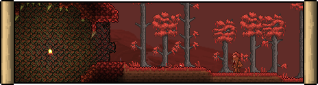
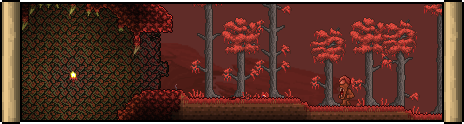

Biomes are the different types of areas that any Terraria world can contain. Every biome has its own characteristic terrain blocks, walls, collectible items, backgrounds, enemies, critters, theme music, Angler quest fish, and other features.
Spanning the world's ceiling is the Space biome. Biomes on the Surface layer include Forests, Deserts, the Snow biome, the Jungle, the Dungeon, the evil biome (either the Corruption or the Crimson), and at the far ends of the world, the two Oceans. These Surface biomes extend into the Underground layer. Going any deeper, the player will find unique subterranean variants of most of these. These include the Underground Desert, Ice biome, and Underground Jungle. The Glowing Mushroom biome also appears in the Cavern layer, and the Underworld spans the entire bottom of the world.
Once Hardmode is activated, a few new biomes form. The world's evil biome roots deeper with the Underground Corruption/Crimson, and the Hallow and Underground Hallow form as well.
The Corruption, Crimson, and Hallow are all "contagious" biomes which spread to certain adjacent tiles. In pre-Hardmode, these biomes will only overtake other biomes via grasses, but once Hardmode begins all three biomes can spread directly through most soil blocks, vines, and thorny bushes.
Relative to the world's horizontal center, the Snow biome and the Dungeon are always located on the same side, and the Jungle and the Underground Desert on the opposite side.
Space is the layer that appears at the top of the world. The sky is dark and the stars are visible, regardless of if the sun is up or not. Gravity is decreased in Space. Harpies spawn here from the start of the game, and Wyverns and Martian Probes during Hardmode.

Forests are the most common surface biomes, and are where the player usually spawns upon starting a new world. Green grass grows across the dirt, which can spawn Mushrooms, Dayblooms, and trees. Forests appear whenever no other biome is valid.

The Snow biome is a winter-themed biome predominately made of Snow and Ice Blocks. Snow falls constantly, though this is only an aesthetic effect. Relative to the world's horizontal center, the Snow biome is always located on the same side as the Dungeon and on the opposite side of the Jungle.

Deserts are large expanses of Sand. Their vegetation is comparatively sparse, consisting of Cacti and Waterleaf.

A world will always generate with an evil biome - either Crimson or Corruption, but never both (unless in drunk worlds). There is a 1/2 (50%) chance of either of the evil biomes generating, although it can be selected manually upon world creation. The evil biomes are hazardous biomes with mostly analogous contents:
 

The Jungle is composed of Jungle grass, vines, Mud, Bamboo and Mahogany trees. The sky appears a vibrant green color. Mahogany trees regrow automatically without the need to plant Acorns. Relative to the horizontal center of the world, the Jungle is always located on the opposite side of the Snow biome and the Dungeon, and the same side as the Underground Desert.

Oceans consist of a sandy shore against a deep body of water where dangerous swimming enemies are found as well as Water Chests which contain ocean-themed loot. They are always located on both horizontal edges of the world. Duke Fishron can be summoned here with a Truffle Worm. The Magic Conch can be used to teleport the player to an Ocean.